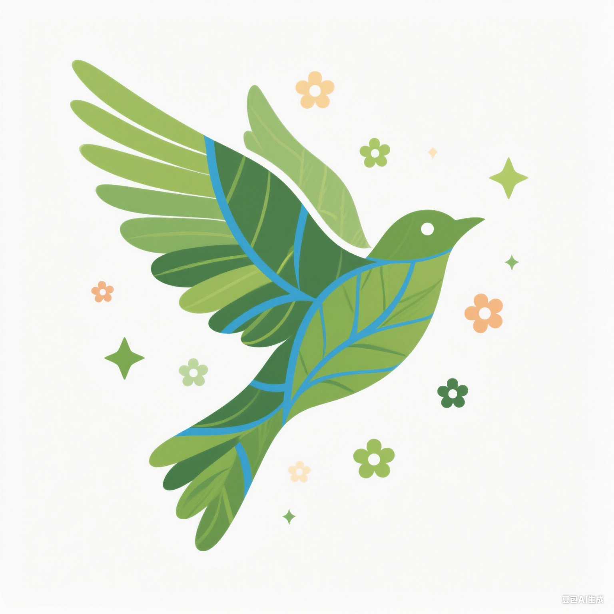

首页
实践与政策
相关知识
知识问答
登录
|
注册
国家发布新一轮生态保护政策
涵盖森林、湿地、海洋三大生态系统保护措施，推动绿色发展新格局
全国绿色城市建设取得显著成效
30个城市获评国家级生态园林城市，城市绿化覆盖率提升至45%
中国生物多样性保护白皮书发布
珍稀物种数量同比增长15%，生态恢复成效显著
要闻
神舟二十号乘组将于近日择机实施第二次出舱活动，开展空间生态实验
近6成统筹区实现生育津贴直接发放至个人，生育政策与生态保护同步推进
2025港澳台大学生网信企业实习计划(深圳)启动，聚焦绿色科技领域
国办发布进一步规范和提升12345热线服务的意见，增设生态环保专线
长江流域生态保护取得新突破，珍稀鱼类种群数量明显恢复
国家林草局：今年已完成造林面积超过6000万亩
碳中和目标推动新能源产业快速发展，风电光伏装机量创新高
湿地保护法实施一周年，全国新增国际重要湿地15处